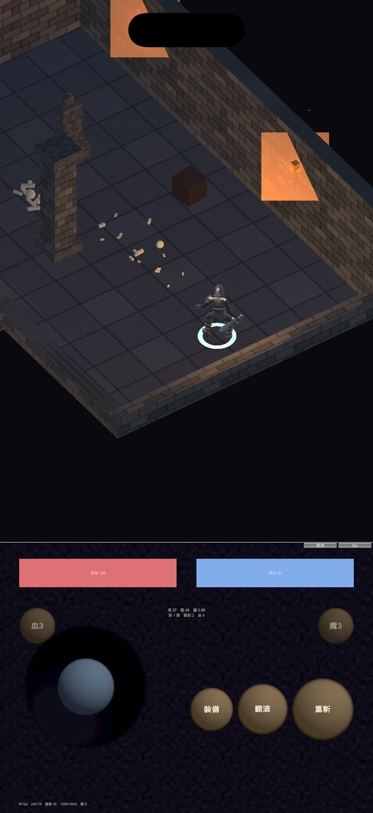
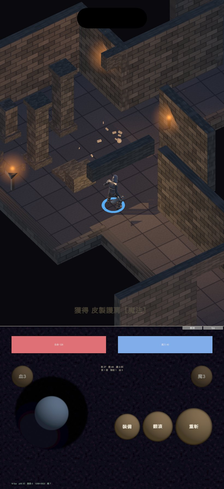
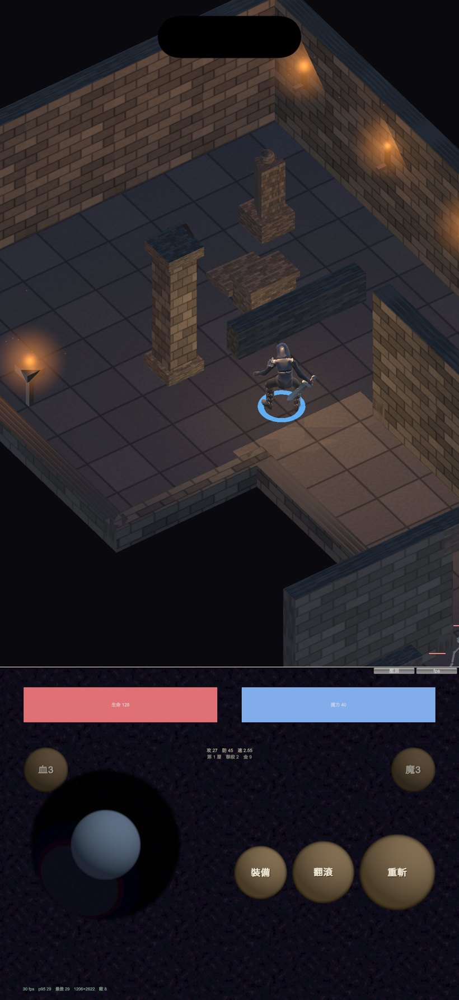

地城迴響 · 實機破圖的修復
Editor 永遠看不到這個問題。修完之後在 iOS 模擬器 （iPhone 17 Pro / iOS 26.4，arm64）實際跑起來確認。



柔光片原本是在執行期用 Shader.Find("Standard") 再手動設加法混合。
打包時 Unity 只保留「專案裡有資產實際用到」的 shader 變體——沒有任何資產用到
Standard 的半透明變體，於是它被剝掉，裝置上退回不透明變體。
改成自己帶一支 shader 放在 Resources 底下：Resources 的東西不會被剝，
而且那支沒有任何 keyword，不存在變體問題。玩家腳環原本用執行期
EnableKeyword("_EMISSION")，是同一類風險（會靜默失去發光），一併改掉。
| 項目 | 結果 |
|---|---|
| 橘色不透明方塊 | 消失 |
找不到 Shaders/Glow 錯誤 | 0 次 |
初始化失敗 DND_INIT_FAIL | 0 次 |
| 任何 Exception（110 秒） | 0 次（log 抓到 270 行，不是空的） |
| 模擬器 fps | 30（軟體渲染上限，不是效能數字） |
還沒解釋的那一半。實機截圖上「生命 0、魔力 0、攻 0 防 0 速 0.00」代表 初始化中途拋了例外——屬性是預設值、沒有敵人、玩家沒有火把、相機沒跟上玩家， 全部指向同一個原因。但模擬器上重現不出來。
所以加了儀器而不是猜：初始化包 try/catch，失敗時把「失敗在哪一步」 加上完整例外畫滿整個螢幕。如果實機再出現，截一張圖就知道是哪一行。
Unity 6000.0.51f1 匯出模擬器專案時只複製 x86_64 的函式庫， 但 Apple Silicon 上的 iOS 26 模擬器是 arm64-only。裝不進去， 錯誤訊息卻是「此 App 需要由開發者更新才能在此版本的 iOS 上運作」 ——完全看不出是架構問題。Unity 自己附了通用版，換檔案這步已經寫進建置腳本。